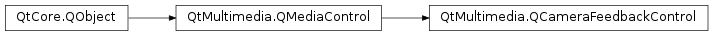

QCameraFeedbackControl¶
Detailed Description¶
The
PySide2.QtMultimedia.QCameraFeedbackControlclass allows controlling feedback (sounds etc) during camera operationWhen using a camera, there are several times when some form of feedback to the user is given - for example, when an image is taken, or when recording is started. You can enable or disable some of this feedback, or adjust what sound might be played for these actions.
In some cases it may be undesirable to play a sound effect - for example, when initiating video recording the sound itself may be recorded.
Note
In some countries or regions, feedback sounds or other indications (e.g. a red light) are mandatory during camera operation. In these cases, you can check
isEventFeedbackLockedto check if that type of feedback can be modified. Any attempts to change a locked feedback type will be ignored.The interface name of
PySide2.QtMultimedia.QCameraFeedbackControlisorg.qt-project.qt.camerafeedbackcontrol/5.0as defined inQCameraFeedbackControl_iid().See also
-
class
PySide2.QtMultimedia.QCameraFeedbackControl([parent=nullptr])¶ Parameters: parent – PySide2.QtCore.QObjectConstructs a camera feedback control object with
parent.
-
PySide2.QtMultimedia.QCameraFeedbackControl.EventType¶ This enumeration describes certain events that occur during camera usage. You can associate some form of feedback to be given when the event occurs, or check whether feedback for this event is enabled or locked so that changes cannot be made.
Constant Description QCameraFeedbackControl.ViewfinderStarted The viewfinder stream was started (even if not visible) QCameraFeedbackControl.ViewfinderStopped The viewfinder stream was stopped QCameraFeedbackControl.ImageCaptured An image was captured but not yet fully processed QCameraFeedbackControl.ImageSaved An image is fully available and saved somewhere. QCameraFeedbackControl.ImageError An error occurred while capturing an image QCameraFeedbackControl.RecordingStarted Video recording has started QCameraFeedbackControl.RecordingInProgress Video recording is in progress QCameraFeedbackControl.RecordingStopped Video recording has stopped QCameraFeedbackControl.AutoFocusInProgress The camera is trying to automatically focus QCameraFeedbackControl.AutoFocusLocked The camera has automatically focused successfully QCameraFeedbackControl.AutoFocusFailed The camera was unable to focus automatically
-
PySide2.QtMultimedia.QCameraFeedbackControl.isEventFeedbackEnabled(arg__1)¶ Parameters: arg__1 – PySide2.QtMultimedia.QCameraFeedbackControl.EventTypeReturn type: PySide2.QtCore.boolReturns true if the feedback for
eventis enabled.
-
PySide2.QtMultimedia.QCameraFeedbackControl.isEventFeedbackLocked(arg__1)¶ Parameters: arg__1 – PySide2.QtMultimedia.QCameraFeedbackControl.EventTypeReturn type: PySide2.QtCore.boolReturns true if the feedback setting for
eventis locked. This may be true because of legal compliance issues, or because configurability of this event’s feedback is not supported.
-
PySide2.QtMultimedia.QCameraFeedbackControl.resetEventFeedback(arg__1)¶ Parameters: arg__1 – PySide2.QtMultimedia.QCameraFeedbackControl.EventTypeRestores the feedback setting for this
eventto its default setting.
-
PySide2.QtMultimedia.QCameraFeedbackControl.setEventFeedbackEnabled(arg__1, arg__2)¶ Parameters: - arg__1 –
PySide2.QtMultimedia.QCameraFeedbackControl.EventType - arg__2 –
PySide2.QtCore.bool
Return type: PySide2.QtCore.boolTurns on feedback for the specific
eventifenabledis true, otherwise disables the feedback. Returns true if the feedback could be modified, or false otherwise (e.g. this feedback type is locked).- arg__1 –
-
PySide2.QtMultimedia.QCameraFeedbackControl.setEventFeedbackSound(arg__1, filePath)¶ Parameters: - arg__1 –
PySide2.QtMultimedia.QCameraFeedbackControl.EventType - filePath – unicode
Return type: PySide2.QtCore.boolWhen the given
eventoccurs, the sound effect referenced byfilePathwill be played instead of the default sound.If this feedback type is locked, or if the supplied path is inaccessible, this function will return false. In addition, some forms of feedback may be non-auditory (e.g. a red light, or a vibration), and false may be returned in this case.
The file referenced should be linear PCM (WAV format).
Note
In the case that a valid file path to an unsupported file is given, this function will return true but the feedback will use the original setting.
- arg__1 –
© 2018 The Qt Company Ltd. Documentation contributions included herein are the copyrights of their respective owners. The documentation provided herein is licensed under the terms of the GNU Free Documentation License version 1.3 as published by the Free Software Foundation. Qt and respective logos are trademarks of The Qt Company Ltd. in Finland and/or other countries worldwide. All other trademarks are property of their respective owners.